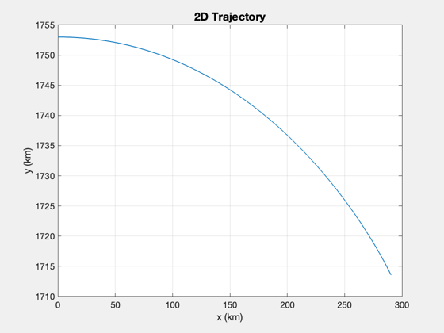
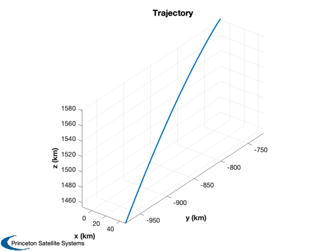
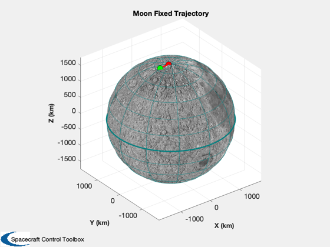
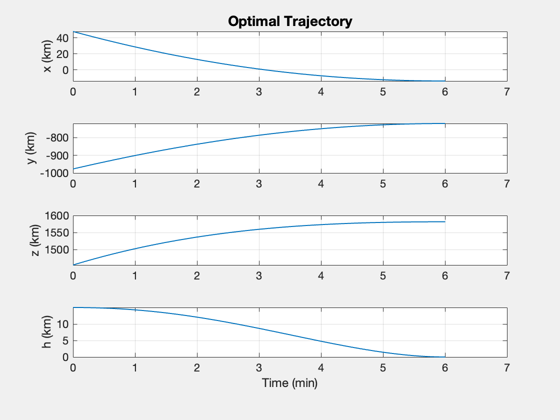
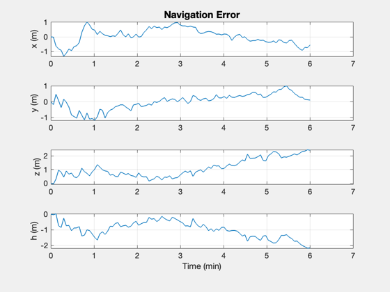
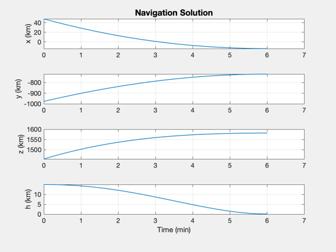
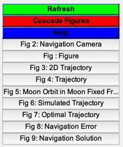

Lunar Landing TRN Sim
It first creates an optimal 2D trajectory which is transformed into 3D for a north pole landing. It replicates the trajectory in a simulation. There are 3 sections:
1. Compute optimal trajectory 2. Run a simulation with the computed acceleration 3. Test optical navigation
You can run each independently once all three sections have run. The simulation results are used in the Kalman Filter for testing.
See also: LunarTrajectoryControl, OptimalLunarLanding, PlotPlanetaryOrbit, RHSPlanet3DONS, OpticalNavigation, Period, TimeLabl, Plot2D, Plot3D, Figui
Contents
%-------------------------------------------------------------------------- % Copyright (c) 2021 Princeton Satellite Systems, Inc. % All rights reserved. %-------------------------------------------------------------------------- % Since version 2021.1 %--------------------------------------------------------------------------
Compute the optimal landing trajectory
It optimizes a 2D trajectory then transforms it into a 3D trajectory in ECI
% Constants rM = Constant('equatorial radius moon'); mu = Constant('mu moon'); secInDay = 86400; mInKm = 1000; % Start at 15 km r = rM + 15; d = LunarTrajectoryControl; x = [r;0;0;0;0;sqrt(mu/r)]; % Circular polar orbit Lunar fixed x = LFToECI(x,d.jDTarget) % Convert to ECI p = Period(r,mu); jD = d.jDTarget - (p/4)/secInDay; % It will print out the optimization steps d = LunarTrajectoryControl( 'initialize', x, jD, d ); % Plot Plot2D( d.xP2D(1,:), d.xP2D(2,:),'x (km)','y (km)','2D Trajectory'); Plot3D( d.xTrajECI(1:3,:), 'x (km)', 'y (km)', 'z (km)', 'Trajectory' ); % Plot the orbit around the moon PlotPlanetaryOrbit( d.xTrajECI(1:3,:), 'Moon', d.tTraj, d.jDStart );
x =
-369.01
1589
641.85
-0.02784
-0.63248
1.5498
First-order Norm of
Iter F-count f(x) Feasibility optimality step
0 201 3.434516e+02 5.617e+01 8.798e-03
1 402 3.317403e+02 3.325e+00 1.276e+00 4.184e+00
2 603 3.598487e+02 1.126e+00 7.909e-01 2.862e+00
3 804 3.599937e+02 1.551e-02 2.652e-01 3.585e-01
4 1005 3.602424e+02 5.266e-04 1.000e-01 8.885e-02
5 1206 3.602436e+02 2.931e-04 2.167e-02 5.801e-02
6 1407 3.602499e+02 2.564e-05 1.055e-02 1.324e-02
7 1608 3.602499e+02 1.908e-06 4.684e-03 9.851e-03
Optimization completed: The relative first-order optimality measure, 4.683910e-03,
is less than options.OptimalityTolerance = 1.000000e-02, and the relative maximum constraint
violation, 3.396479e-08, is less than options.ConstraintTolerance = 1.000000e-02.
   Run a simulation with the computed acceleration
% These states are used as the measurement input for the next section n = length(d.tTraj); % Pre-allocate memory xPS = zeros(6,n); % Initial state from the optimal trajectory x = d.xTrajECI(:,1); dT = d.tTraj(2); % Get the data structure dRHS = RHSPlanet3DONS; % Run the simulation for k = 1:n xPS(:,k) = x; % truth dRHS.acc = d.a(:,k); x = RK4(@RHSPlanet3DONS,x,dT,0, dRHS); end % Plotting yS = {'x (km)' 'y (km)' 'z (km)' 'h (km)'}; [t,tL] = TimeLabl(d.tTraj); h = Mag(xPS(1:3,:)) - rM; Plot2D(t,[xPS(1:3,:);h],tL,yS,'Simulated Trajectory'); h = Mag(d.xTrajECI(1:3,:)) - rM; Plot2D(t,[d.xTrajECI(1:3,:);h],tL,yS,'Optimal Trajectory');
Test optical navigation
% Set up optical navigation dONS = OpticalNavigation; dONS.target = 1; % The moon dONS.useUKF = true; dONS.ukf.useState = false; dONS.ukf.usePos = true; dONS.ukf.useOptical = false; dONS.ukf.f = @RHSPlanet3DONS; dONS.ukf.fData = RHSPlanet3DONS; dONS.t = 0; dONS.ukf.x = d.xTrajECI(:,1); dONS.ukf.m = d.xTrajECI(:,1); % Measurement noise oneSigma = [0.01;0.01;0.01;0;0;0]; % 10 m from the neural network % Initialize dONS = OpticalNavigation( 'initialize', dONS, d.xTrajECI(1:3,1), d.xTrajECI(4:6,1), dT ); % Pre-allocate memory xP = zeros(6,n); % Run the estimator for k = 1:n xP(:,k) = dONS.x; meas.state = xPS(:,k) + oneSigma.*randn(6,1); % truth plus noise meas.acc = d.a(:,k); dONS.t = d.tTraj(k); dONS = OpticalNavigation( 'update trn', dONS, meas ); end % Plot [t,tL] = TimeLabl(d.tTraj); % Altitude above a spherical moon h = Mag(xPS(1:3,:)) - rM; hS = Mag(xP(1:3,:)) - rM; ySM = {'x (m)' 'y (m)' 'z (m)' 'h (m)'}; Plot2D(t,[xP(1:3,:) - xPS(1:3,:);h-hS]*mInKm,tL,ySM,'Navigation Error'); Plot2D(t,[xP(1:3,:);hS],tL,yS,'Navigation Solution'); % Makes a GUI with all plots Figui %-------------------------------------- % $Id: afd363616025545137ad349f5d728ee7acb7d552 $  